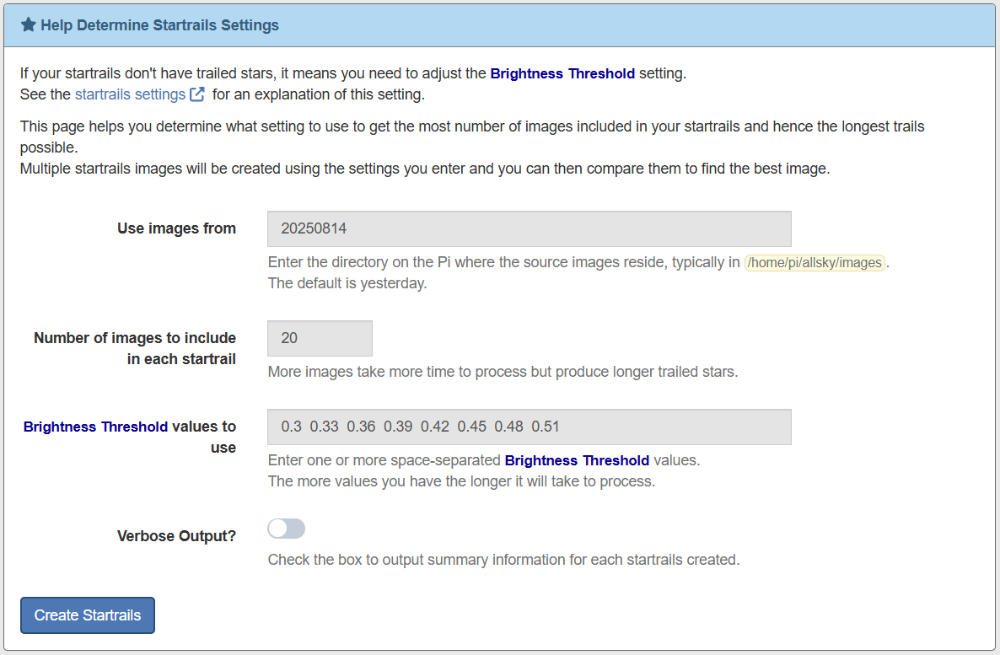
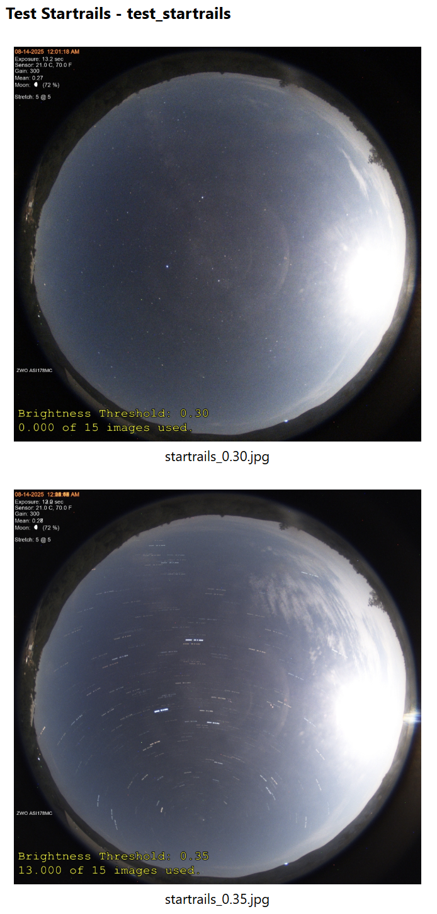
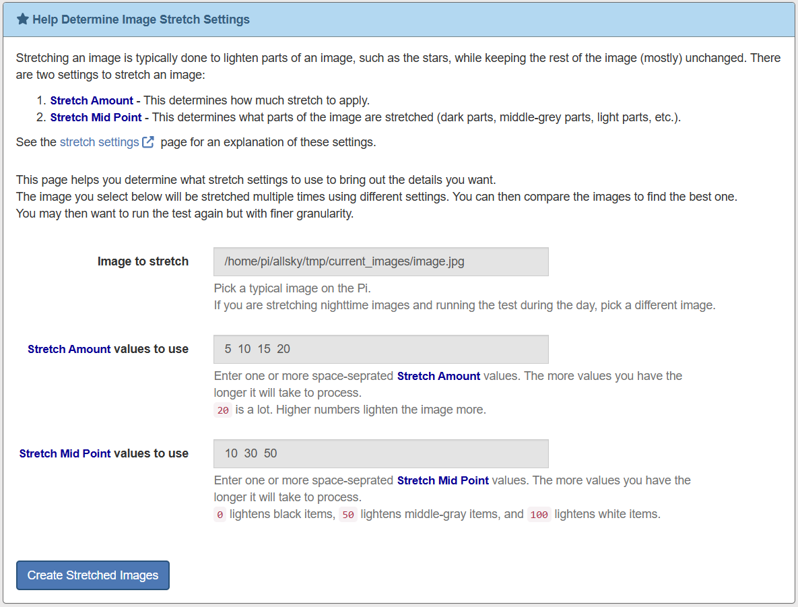
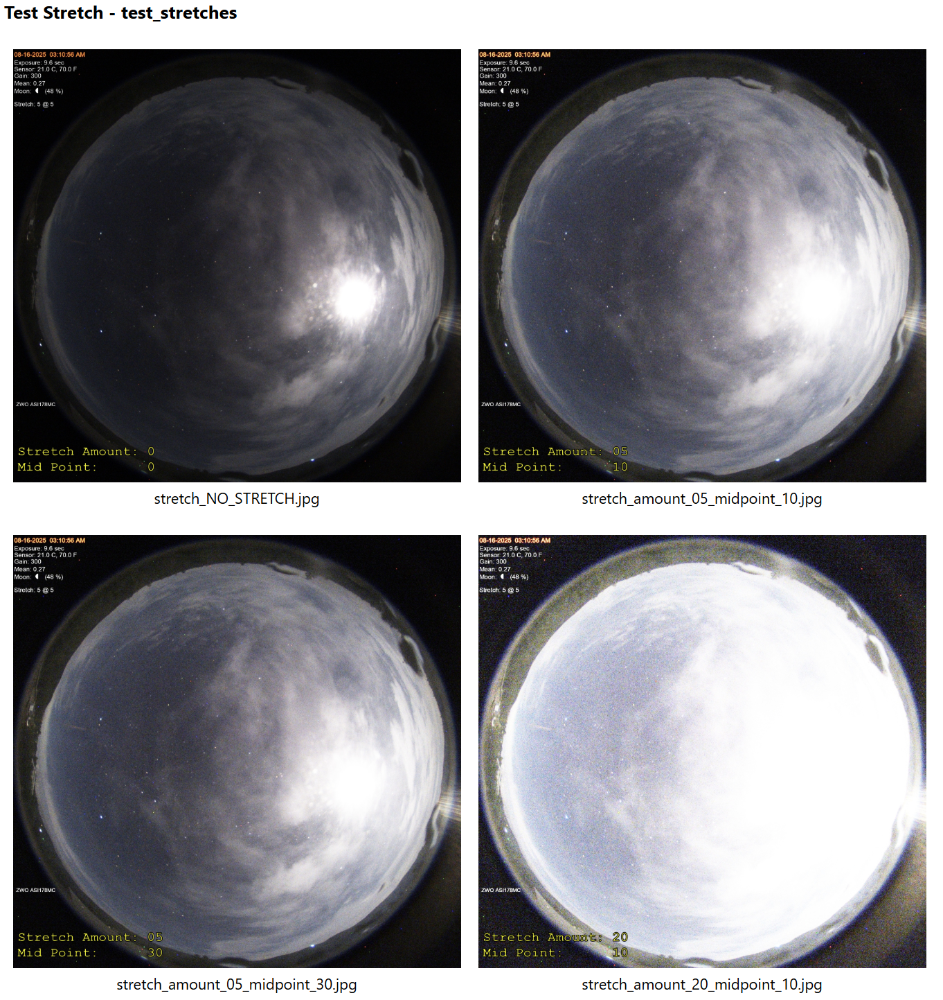
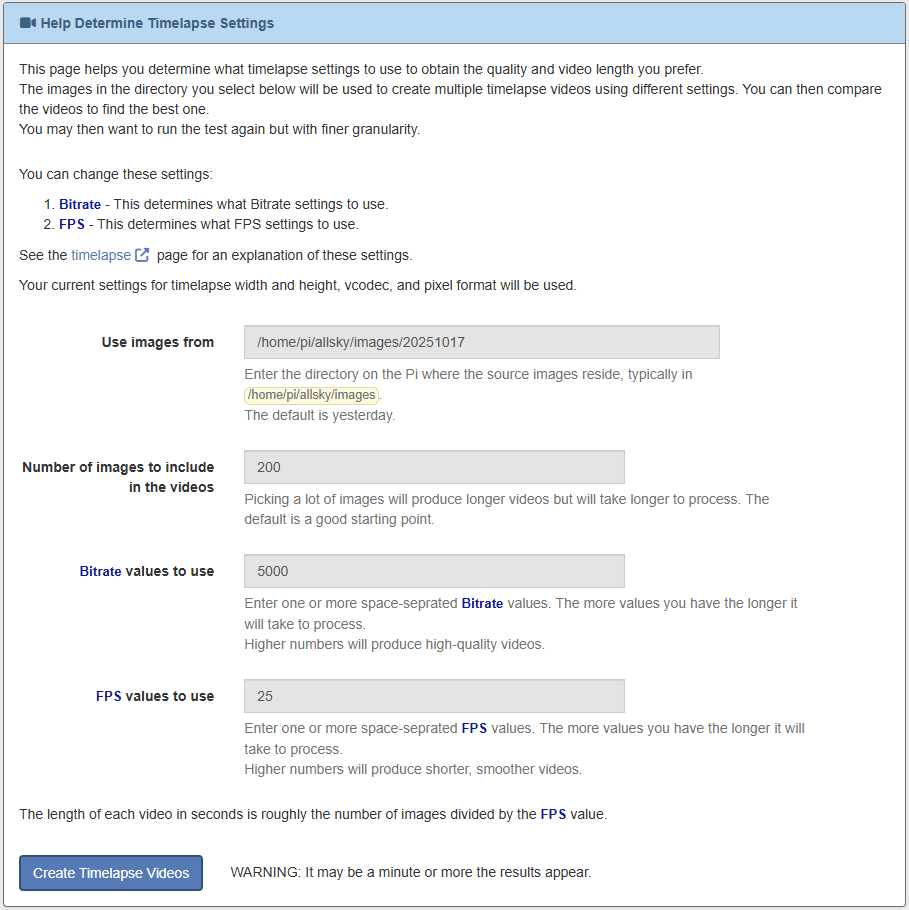

The WebUI Helper Tools do what the name suggests - they "help" you do something, often helping determine what settings to use.
Startrails
The Startrails helper tool aids you in determining what Brightness Threshold setting to use.
Many people find the stars in their startrails images don't have trails.
This can almost always be fixed by adjusting the
startrails Brightness Threshold setting.
This helper tool allows you to specify multiple settings and then look at the results
and pick the setting that gives you the best trails without including too many
bright images.
This is a typical Startrails Helper Tool page:

The following information is needed:
- Use images from
This determines what images on the Pi will be used to create the test startrails. Ideally you want to use images from a night whose startrails had no trails.- If you don't change it, images from last night are used.
- If you enter a directory name that begins with a / then that full path name will be used.
- Otherwise the directory you enter is assumed to be in the same location as the daily images.
- Number of images in include in each startrail
Pick a number of images to include in each startrails that is big enough that you'll be able to see trailed stars, but small enough that you won't have to wait an extremely long time to see the results.
Start with the default and adjust as needed. - Brightness Threshold values to use
This is where you tell the command what settings to use. Keep in mind that every number you enter will produce a separate startrails image so don't add too many number or else you'll be waiting a long time for the results.
The first number in the default list is your CURRENT Brightness Threshold value. You will almost always have to increase your current value so each subsequent number in the default is larger than the previous one. The default values increase by0.03.
Once you are "close" you can run this tool again with numbers that are much closer together, such as0.01. - Verbose output?
Enabling this option displays summary information on each test startrails, including the number of images included and not included.
A typical output is shown below.
Note that no images were used in the first startrails with a
Brightness Threshold of 0.30.
This is probably because the moon is out on the right side of the image
so the overall brightness of the image is somewhat high.
The second image has trails but only 13 of the 15 images were used
so the ideal Brightness Threshold
is probably a little higher than 0.35.

Image Stretch
The Image Stretch helper tool aids you in determining the best settings to stretch an image.
If you want to lighten parts of your image to bring out details
you can "stretch" your images.
The Stretch Amount setting determines how
much of a stretch is applied,
and the Stretch Mid Point determines WHERE the
stretch is applied - to the dark parts of an image, the mid-gray parts, the light parts,
or anything in between.
This helper tool allows you to specify multiple settings and then
look at the results.
This is a typical Image Stretch Helper Tool page:

The following information is needed:
- Image to stretch
By default the current image is used. If you are running this tool during the day and want to stretch nighttime images, find a "typical" nighttime image to use.If you are already stretching images the tool will display a warning. Find a non-stretched image to use - you don't want to stretch and already stretched image. If you don't have any non-stretched images, temporarily turn stretching off and wait until you have an image, then use it.
- Stretch Amount values to use
This determines how much of a stretch to apply. The default list is a good place to start.
Note that stretching images increases their noise, which you can see in the 4th image below. - Stretch Mid Point values to use
This determines what part of an image is modified. Lower numbers modify darker parts of the image and higher numbers modify lighter parts of the image.
You'll probably want / need to run this tool multiple times. Changes to the Amount are fairly obvious but changes to the Mid Point can be very subtle and often need to be played with.
A typical output is shown below.
Note that the first images has no stretch.
This is so you can see what the different settings do.
The last image has a Stretch Amount of 20, which is way too much.

Timelapse
The Timelapse helper tool aids you in determining the best settings to use when creating timelapse videos.
This is a typical Timelapse Helper Tool page:

The following information is needed:
- Use images from
This determines where the images are that will be used to create the timelapses. By default yesterday's images are used. - Number of images to include in the videos
This determines how many images to use. The more images you include the longer the video, but the longer it'll take to create each timelapse. The default number is a good place to start. - Bitrate values to use
This determines the quality of a timelapse. Higher bitrates include more information in each frame, but also make the video larger.
Enter a space-separated list of bitrates. - FPS values to use
This determines how many frames per second are displayed, and hence how long the video is. Larger numbers produce smoother, but larger videos.
Enter a space-separated list of bitrates.
Note that the number of videos created is the number of bitrates times the number of FPS values, so if you have 3 bitrates and 5 FPS then 15 videos will be created, which will take a LONG time.
We recommend initially leaving the FPS values to the default, which is your current FPS setting, and using 2 or 3 bitrates. Once you have the quality you desire, use that as the only bitrate and use 2 or 3 FPS values.
A typical output is shown below.
Note that you won't see a difference in the images below - you'd need
to play the videos.